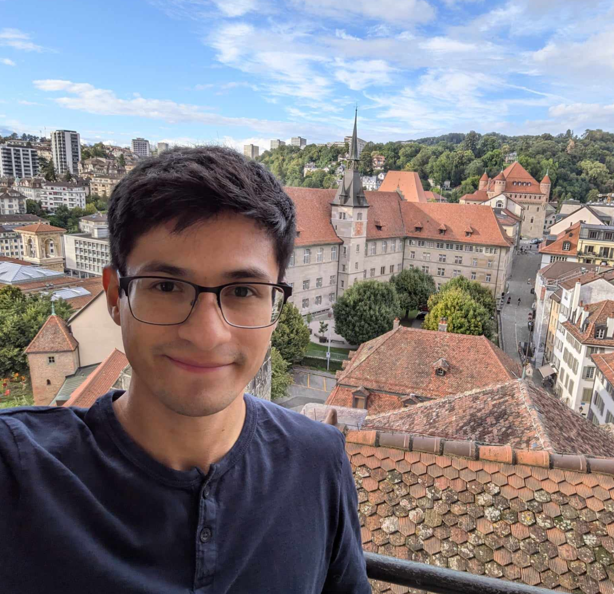

Víctor Hugo Almendra Hernández
victoralm (at) uchicago (dot) edu
Office TBD

About
Hi! I am a third year grad student in the Department of Mathematics at the University of Chicago, advised by Madhur Tulsiani and Alexander Razborov. Previously, I was an undergrad at Universidad Nacional Autónoma de México where I had the opportunity to work on my thesis under the guidance of Rita Jiménez Rolland.
I am interested in theoretical computer science, especially in combinatorial and topological/geometric ideas. I am broadly interested in high dimensional expanders (HDX), complexity theory, error correction, pseudorrandomness and sampling algorithms. Recently I have been studying constructions of HDX.
During my time in undergrad I had the chance to have a taste of areas like algebraic combinatorics, algebraic topology (particularly representation stability) and discrete geometry, all of which I am always keen to learn more about.
Here is my CV.
Publications
- Quantitative Helly-type theorems via sparse approximation.
(with Gergely Ambrus and Matthew Kendall)
Discrete & Computational Geometry 2022. Arxiv preprint. - On prescribing total orders and preorders to pairwise distances of points in Euclidean space.
(with Leonardo Martínez-Sandoval)
Computational Geometry: Theory and Applications. 2022. Arxiv preprint.
Teaching
UChicago - College Fellow
- MATH 16310: Honors Calculus III (IBL).
- MATH 16210: Honors Calculus II (IBL).
- MATH 16110: Honors Calculus I (IBL).
UNAM - Teaching Assistant
- Discrete mathematics for bachelor’s program in Data Science.